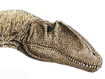
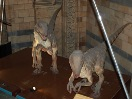

Carcharodontosaurus - W

karcharodontozaur 1996 r. na marokańskiej pustyni naukowcy odkryli szczątki
gigantycznego mięsożernego dinozaura. Sama jego czaszka mierzyła 1,6 m i była dłuższa
od czaszki tyranozaura. Nazwę, oznaczającą ,, dinozaura rekin ozębnego”, zawdzięcza
imponującym zębom o długości 12 cm.
Suchomimus - Szczątki tego dinozaura odkryto w 1998 r. na Saharze.
Przedstawiciel grupy rybożernych dinozaurów Spinosauride, miał długi, wąski
pysk (jak krokodyl) i mierzące 30 cm pazury na kciukach.
Baryonyks - Odkryty na początku lat osiemdziesiątych XX wieku w angielskiej
gliniance. Od innych dinozaurów różnił się nie ]tylko szkieletem , ale i dietą.
Jadł ryby. Gad miał dwa budzące respekt ,30 – centymetrowe szpony.
Leaellynasaura - mały dinozaur pochodzący z wczesnej kredy Jego szkielet
został znaleziony w stanie Wiktoria w Australii. Zalicza się go do ornitopodów.
Wielu naukowców sądzi, iż był to dinozaur stałocieplny. Stałocieplność umożliwiała
mu przetrwanie w obszarach podbiegunowych, w których wtedy znajdowała się Australia.
Wiele wskazuje na to, że był to gad o wielkich oczach. Stwierdzono również u lielynazaury
dobrze rozwinięte płaty wzrokowe mózgu. Dobry wzrok świadczy o tym, ze dinozaur
ten mógł aktywnie przetrwać ciemne zimowe miesiące.
Deinonychus - Deinonychus szybki i zwinny drapieżnik,

Deinonychmiał osobliwą broń-na drugim palcu u każdej stopy wielki
zakrzywiony pazur długości 12 cm. Dinozaur być może, stojąc na jednej nodze, jednocześnie
pazurem drugiej atakował i rozrywał mięso ofiary.
Karnotaur - był mięsożernym dinozaurem z podrzędu teropodów.Nazwa
rodzajowa Carnotaurus oznacza mięsożernego byka. Karnotaur należy do rodziny abelizaurów.
Jego kończyny tylne były długie i dość mocno zbudowane. Z kolei kończyny przednie
karnotaura w porównaniu do wielkości jego ciała były bardzo małe. Szczególnie dotyczy
to kości przedramienia, które wygladają niemalże jak kości nadgarstka. W przeciwieństwie
jednak do równie krótkich kończyn przednich tyranozaura, przednie kończyny karnotaura
były zaopatrzone w cztery chwytne palce. Głowa karnotaura była wyższa i krótsza
niż u innych teropodów. Po obu jej stronach nad oczodołami wyrastał pojedynczy ostro
zakończony kostny róg. Żuchwa karnotaura była dość smukła i niezbyt mocna, a zęby
niezwykle cienkie jak na tak dużego teropoda. Pomimo to były ostre i piłkowate,
więc nadawały się do rozszarpywania zdobyczy. Szczęka karnotaura rozszerzała się
na boki, co nadawało jego głowie, oglądanej z przodu, trójkątny kształt. Oczy karnotaura
były małe i skierowane ku przodowi. Część kręgów karnotaura miała charakterystyczne
skrzydłowe wyrostki. Znalezione skamieniałości wskazują na to, że większa część
ciała karnotaura była pokryta skórą o ziarnistej, łuskowatej strukturze.
Spinozaur - rodzaj mięsożernego dinozaura należącego do rzędu dinozaurów
gadziomiednicznych i rodziny spinozaurów , występującego na terenie dzisiejszej
Afryki Północnej w późnej kredzie, około 98-90 mln lat temu. Jego szczątki odkrył
w 1912 roku w egipskiej oazie Baharija niemiecki paleontolog Ernst Stromer. Jest
największym znanym współczesnej paleontologii teropodem. Dorosły osobnik mógł osiągać
około 16-18 metrów długości i 7-9 ton wagi, czyli więcej niż Tyrannosaurus rex i
giganotozaur. Spinozaur został zaprezentowany w filmie Jurassic Park III.Spinozaur
miał charakterystyczny, wydłużony pysk, podobny do paszczy krokodyla, niewielkie
przednie kończyny, długi ogon i charakterystyczny, złożony z wydłużonych wyrostków
kolczystych pokrytych skórą „żagiel” na grzbiecie. Naukowcy nie wiedzą na pewno,
do czego dinozaurowi był potrzebny taki żagiel, choć według niektórych teorii służył
do regulowania temperatury ciała, bądź był używany w okresie godowym do wabienia
partnera.
Młodsza epoka kredy, trwająca około 46 milionów lat (od 145,5 ± 4,0 do 99,6 ± 0,9
mln lat temu). Dzieli się na sześć wieków: berrias, walanżyn, hoteryw, barrem, apt
i alb. Chronostratygraficznym odpowiednikiem epoki wczesnej kredy jest oddział –
kreda dolna.